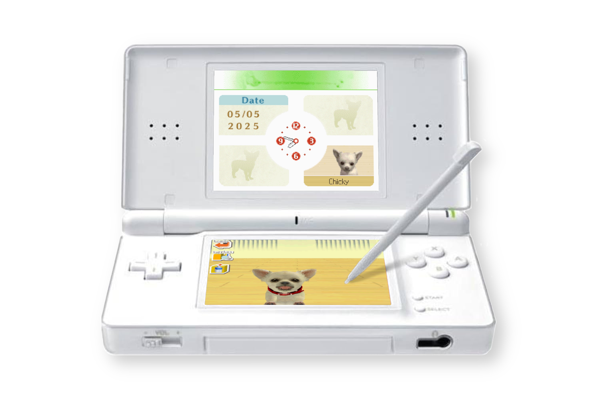
Nintendogs was my first Nintendo DS game, and the inspiration for one of my very first programming projects as an amateur. In 2015, I wrote a text-based version of Nintendogs, called MyPet. It was my first foray into artificial life, and it lets you take care of a virtual dog that lives inside a terminal window. You can take your pup on walks (in which all sorts of antics are bound to occur), play with them using various toys like a tennis ball or frisbee, feed & bathe them, all that fun stuff. As I didn't implement save files at the time, when you quit the program, your dog "barks goodbye", and is forever lost to the aether. The disappearance of life from your terminal that was not there just minutes before is oddly somber.
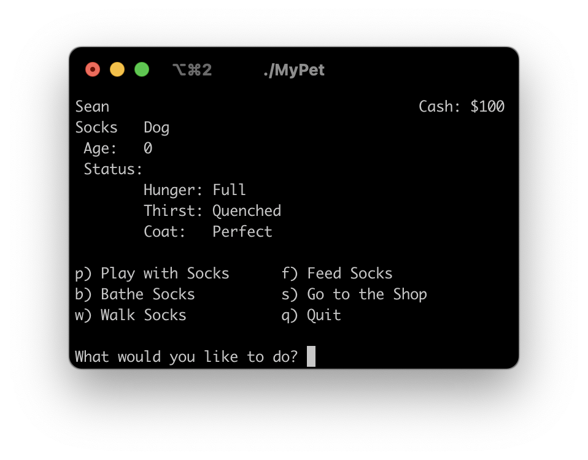
You can play MyPet online here. Press the button at the top of the page, and the program will run in a terminal at the bottom.
In 2018, I read a book called A Closed and Common Orbit - an absolutely lovely book, one of my favorites. Two stories are delivered in parallel: the story of Jane 23, a child slave in an electronics factory, who escapes and is raised by an AI of an abandoned ship named Owl; and the story of Sidra, a recently-wiped AI that was installed into a "body kit" and is learning what it is to be, with the help of her rescuer, and engineer Pepper. It is a wonderful character exploration, and I found myself deeply caring for all of these characters along the way.
I was inspired by the book to play around with simple reasoning and inference, and make use of text-to-speech and speech recognition APIs to create a rather elementary voice assistant that could tell jokes, tell you about any topic that can be found on Wikipedia, and store information in a graph-based knowledge system that allowed it to answer questions using inference. For example, you could say: "Remember that Bob is a trainer. Remember that every trainer owns a dog. Does Bob own a dog?" and it would say "Yes." It was rather basic, using regular expressions for matching input to rules, and could only represent relationships between any or all of X either being or owning Y. I named this program Sidra, because of course I was still very obsessed with the book.
Towards the end of the book, there is a nice scene where some folks are happy, and also present is what is referred to as a petbot - a small robot dog, kind of like Goddard from Jimmy Neutron, although I imagined it a bit more like i-Dog. For some odd reason, that small detail in the scene was really, really neat to me, and gave me an itch to build something similar - a little fella, like just a little robot guy. Until that point, I had made MyPet, and Sidra; I had implemented Conway's Game of Life, used cellular automata to generate organic-seeming dungeons for a top-down game, and experimented with perlin noise and thresholding-based landmass generation - these were all very fun and rewarding projects. But I still really wanted to make a little fella.
So, last year, I started working on a friend that I call BUDD-E, as in buddy, because he is a buddy. (Maybe it can stand for something, but it is of course also an homage to WALL-E). My goal was to create something that simulated some kind of cognitive process in such a way that allows for some kind of emergent properties to arise, and I arrived at the decision to have the PAD emotional state model be a significant part of his core state. With the PAD model, an emotional state is a 3-dimensional vector, where the dimensions are:
- Pleasure Displeasure: is the emotion good or bad? (Think happy vs sad)
- Arousal Nonarousal: is the emotion an energetic one, or more low energy? (Think excited vs relaxed)
- Dominance Submissiveness: does the emotion come from a sense of control, or a loss of it? (Think mad vs scared)
So, for example, "happy" could be considered as high pleasure, moderate arousal, and moderate dominance, whereas "anxious" could be low pleasure, high arousal, and low dominance. Happiness is a good feeling, but it's also a little stimulating, and you also feel somewhat in control when you are happy. Anxiety is of course not a good feeling, but it is quite stimulating, and you very much do not feel in control when feeling anxious. With this model, emotions can be quantified like this, and numerical values can be assigned to particular emotions.
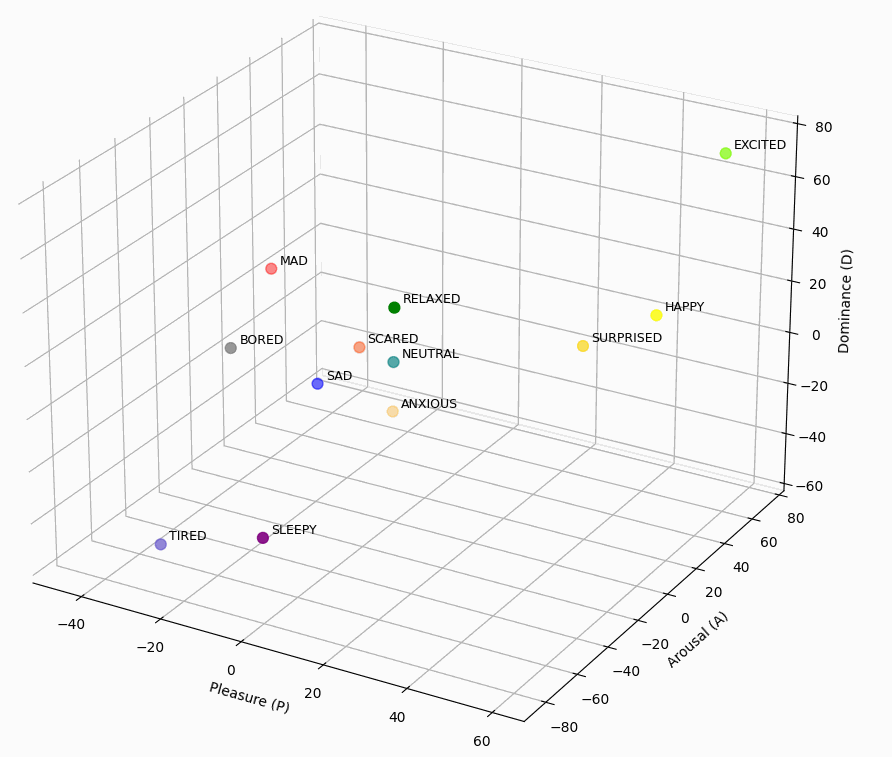
Above, each emotional state that BUDD-E can express is represented as a point in this 3D space. I refer to these points as "anchors." His current emotion at any given time is also represented as a point in this space. So, in order for the system to determine which emotion to express, it simply finds which emotion anchor his emotion is closest to.
The locations of each of the emotional anchors are not prescribed by the model, and it has taken quite a bit of fiddling and experimentation to approach a set of points that makes sense. I referenced several papers that had different ideas from each other, using PAD for different applications. A common application I found was to use PAD for directly mapping a point in the PAD space to transformations of facial features in order to express that emotion (here).
But, you may ask, how does BUDD-E express emotions? Brilliant question. Displaying 3 numbers on a screen is not the most relatable way to express an emotion, is it? So, for each emotion that BUDD-E can represent, I animated a facial expression that is rendered parametrically in real time on his display, as well as associated each emotion with a tone. First, let's look at the facial expressions. But, before we can do that, we have to look at the display.
BUDD-E's display (i.e. face) is a small, 1.28" circular display. It's controlled by a driver chip embedded on the display module itself, and to connect to the display, 7 wires are needed to connect to the 7 pins of the module:
| Vcc | This is where we connect BUDD-E's own 3.3 volt output pin, in order to power the display module. |
| GND | Our ground pin, which we can connect to a ground pin on BUDD-E's main board, to complete the circuit. |
| SCL | This is the clock pin, used to sync the data transfer between the main board and the display. |
| SDA | The data pin: on this pin is where we actually pass the data to be displayed, or commands to the display controller. |
| DC | This pin is used to indicate to the display controller whether the data we are sending on the SDA pin is to command the controller, or if we are sending actual pixel data for the display. |
| CS | For our uses, this pin is not needed, but it is used if you connect multiple peripheral modules all in the same circuit, in order to indicate which peripheral you are sending data to. |
| RST | Reset, of course, resets the display. |
If you're familiar with electronics, the labels for the pins may seem a bit odd, as SDA and SCL are typically terms you see when working with I2C systems. The GC9A01 does not work over I2C, but SPI, and the manufacturer was perhaps just having a funny day when writing the labels for the PCB design and used I2C conventions instead of SPI conventions.
A circular display just feels a bit more life-like, though of course one can always house a square display in whatever shape housing one likes and make it feel quite lively, too. Thanks to the efforts of kind folks online, I did not have to stress with correctly commanding the controller IC, as there are libraries available that handle the startup commands, configuration, and conversion of PIL Image objects to a data format that the display likes. So, all I had to do (after hooking it up and getting things to actually work which was more trouble than anticipated) was actually create the images to be displayed.
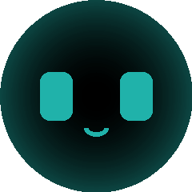
Neutral
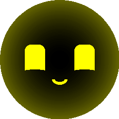
Happy
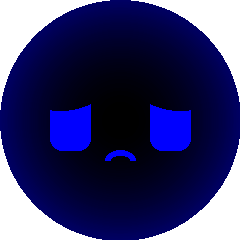
Sad
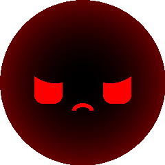
Mad
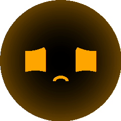
Anxious
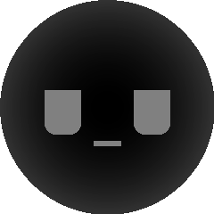
Bored
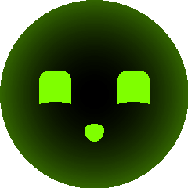
Excited
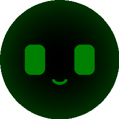
Relaxed
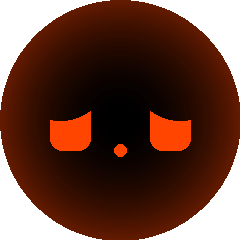
Scared
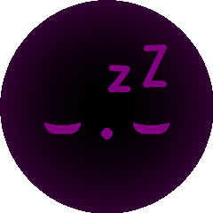
Sleepy
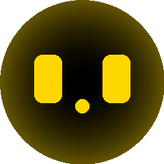
Surprised
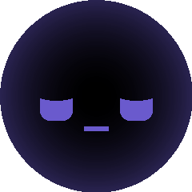
Tired
Each of BUDD-E's facial expressions is drawn directly, in real time each frame, using PIL's ImageDraw module. It is rather barebones, so atomic directives are used to create composite shapes - such as BUDD-E's rounded rectangle eyes, which are drawn via 2 rectangles and 4 "pieslices", i.e. sectors or wedges. If BUDD-E is happy, the rounded rectangle of each eye has a lower portion drawn over with a circular mask, to simulate the raised cheeks eclipsing the eyes. If he's sad, then a similar thing is done to the top of the eyes, to simulate drooped brows. The circle that eclipses the original eye shape can be moved to alter the effect, making the difference between sad brows and angry brows. If BUDD-E is bored, we can mask off the top half of the eyes with a rectangle, to give an indifferent, aloof expression. Rendering the faces in real time allows for all of these parameters to be adjusted easily, and have universal animations like blinking work over all facial expressions while only needing to be implemented once.
Another aspect of BUDD-E's emotional expression is via tone. An old pair of wired earphones are plugged into his 3.5mm jack, which are used to play sine-wave based tones at varying frequencies and durations. For example, if BUDD-E wants to say "hello," he plays a sine wave at 1900Hz for 0.15 seconds, followed by 1830Hz for 0.15 seconds. The frequencies and durations are pretty arbitrary, I just played around with different sounds for each expression to find something that sounded like what I was trying to convey.
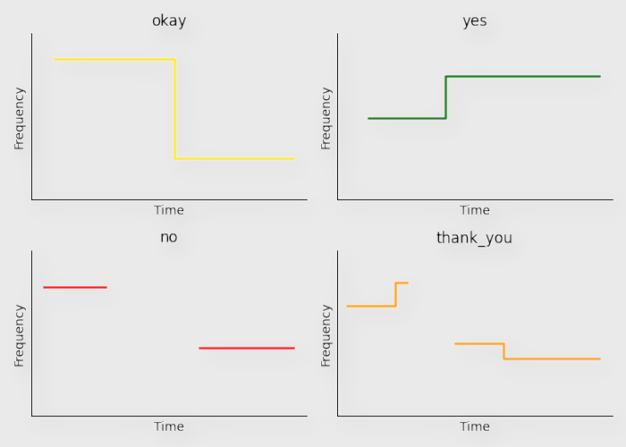
Above are some examples of tunes that BUDD-E uses to express different words and phrases. For "yes" and "no", these are expressed more similar to their hummed counterparts "mm-hmm" and "mm-mm." BUDD-E certainly could be made to use an actual speech synthesizer and say real words, but I think allowing room for interpretation of his expression adds more depth and character. Plus, pitch and rhythm can be easily encoded in this way, and I think those traits of an expression can convey an emotion much better than synthesized words. (Nowadays, there probably is technology that lets you synthesize speech with particular pitches and rhythms, but that would be way too computationally expensive for BUDD-E's simple computer.)
Some other features that enhance the richness of expression include animations that go along with each expression. For "yes", he nods, for "no", he shakes his head in time with his "mm-mm", and for sadness, his head droops in time with his whines. Also, in order to better tie the facial expressions to the played tones, the brightness of the background radial gradient behind his facial features changes with the frequency he is currently playing. So, when he says "no", you can hear the "mm-mm", but you can also see it, in the dimming and brightening of the display.
One danger with modeling emotions with PAD that is a concern to me is that (perhaps) emotions do not solely consist of those three values - there is also cause, context, reflection, and other variables that play into what differentiates emotions. They are not simply just different amounts of each of the three PAD dimensions. Still, I find PAD to be a suitable model, as it is a quantifiable space, and allows for operations on emotion, and ancillary emotion modelling can be done in addition to the PAD state. Also, it is my hope that by implementing a fundamental set of rules with a particular model that complex, higher-order behaviors can emerge that would at least decently simulate emotional states without necessarily needing to explicitly program every single possible complex emotional state that can exist.
Up to now, we've talked about how emotions are represented, but not yet how BUDD-E's emotional state can change. The first way the BUDD-E's emotional state can change is through a mechanic I refer to as "disposition." BUDD-E can be initialized with a particular disposition, itself a point in the PAD space, and over time his emotional state will drift from wherever it is towards this point. So, he could be happy "by default", or bored by default. Emotions outside from this point will naturally decay over time, and he will return to whatever his disposition was configured to be. I typically just have this set to where the neutral emotion is located.
Another danger with this representation, and having BUDD-E's emotional state be a moving point within this space, is that the placement of emotion anchors has to be very careful, such that the sequence of emotions BUDD-E expresses when his emotional state is in transit makes sense. For example, if BUDD-E is excited, and gradually being pulled to his disposition state (neutral), then he will go from excited, to happy, to neutral. However, it may also be that if he is mad, and gradually being pulled towards neutral, that he may go from mad, to sad, to scared, to neutral. You can interpret this sequence of emotions in a way that makes sense - perhaps BUDD-E felt sad that he got so mad, and then was scared that he's upset you, then finally calmed down. But, unless the anchors were specifically placed to architect this behavior, this sequence would be purely unintentional, or if you're generous, you can say it is emergent. Placing emotions in a 3D space such that transitions between them all make sense is a complex and subjective problem.
Another more general way that his emotion can be affected is through forces. As his emotional state is a vector, it is extremely simple to change it due to an effect of something happening to him. Different processes can impart different deltas. One example is related to the state of his battery - as the charge remaining in his battery declines, an emotion delta is imparted over time that pulls his state towards the sleepy anchor. Another mechanism is when BUDD-E is engaged in a chat - he employs a simple sentiment analyzer to determine if the conversation is positive, negative, or neutral, and a corresponding delta is applied to his PAD state. Tell him about what a nice day you've had, and he will react with happy expressions, as well as actually feel happier after the conversation. Tell him about a not-so-nice day, and he can empathize with that as well.
There's a lot more to BUDD-E than just his expressions and emotions. He's an entire robot, after all. He has motorized wheels, a battery pack, power supply, camera, a microphone - and I haven't even touched on his main computer. Let's start there.
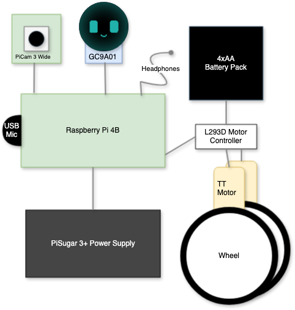
A very simplified view of BUDD-EWhen you start learning computer programming, a world opens up to you - it's like learning an entirely new art medium, and it just stirs so much creativity. You write text-based games, simulations, small little utility programs. Eventually, you feel like you've exhausted your ideas, but then you discover and learn how to use a new library or tool: maybe you go from purely command-line based programs to building games with real graphics, building desktop applications with native UIs, making use of online APIs, or start making web applications in the browser. Each new tool and environment brings with it a bucketload of inspiration and space for creativity, letting you dream up all sorts of projects that you hadn't thought possible before. One such moment for me was buying a microcontroller kit that came with various sensors and input modules, like buttons, switches, potentiometers, small 7-segment displays, and other things like that. And a whole bunch of LEDs. This was, for me, a departure from writing software purely to be ran on my computer, to writing software for a machine that will interact with the real world (beyond a screen, mouse, and keyboard, that is). Using this microcontroller, I played around with the different parts, but never built anything I would call a "project."
 The Gateway space station, designed to orbit the moon. Time will tell if it survives the regime's idiocracy.
The Gateway space station, designed to orbit the moon. Time will tell if it survives the regime's idiocracy.
Eventually, I also purchased a Raspberry Pi, which is much more powerful than a microcontroller, serving as an entire computer with a real OS on it, but still offering the capability of interfacing with various parts that can interact with the real world. I initially bought it to experiment with a flight software framework built at NASA's Goddard Spaceflight Center, as I was working at Kennedy Space Center at the time and learned that an in-development space station at NASA would have its flight software based around the same framework. I got it running and played around with it, but that's about where that ended. My Raspberry Pi served as just another thing to play around with out of curiosity every now and then, such as lighting differently colored LEDs based on what model of plane was flying overhead when I lived near an airport in Orlando. I liked to know when Kalitta Air's 747's, Silver Airways' ATR-600's, or UPS's MD-11's were flying in, as they were neat to watch from my balcony.
The same Raspberry Pi 4B now serves as BUDD-E's central computer, running all of his control logic, from his wheels to his emotions. It's installed with a flavor of the Debian Linux operating system, maintained by the same folks that make the Raspberry Pi, called... Raspberry Pi OS. On top of that, not too much is needed to get BUDD-E's software running. BUDD-E's codebase is mostly written in Python, with a small bit of HTML/CSS/JS for a mobile web dashboard for remote control and metrics during testing.
BUDD-E is one of those types of projects that are kind of like a soup, or department store, or one of those jigsaw puzzles that have a bunch of different types of fish or flowers, rather than one big Thomas Kinkade painting. He consists of several modules that each encapsulate one of his features, and they interact with each other at only the highest level, coordinating things like his facial expression and tones, movement, memory system, camera, etc. Some are more closely tied than others - such as the face module and the emotion module.
| battery | provides awareness of his battery charge percentage and charging state |
| camera | takes photos, recognizes faces and objects |
| emotion | models his emotion |
| face | controls the display and rendering his facial expressions |
| memory | for memory capture, storage, and retrieval |
| server | a web server, serving a web-based dashboard and commanding API, and forwarding commands to BUDD-E |
| speech | processes natural language speech, such as for commands or sentiment analysis |
| voice | BUDD-E's voice, plays tones for his expressions |
| wheels | controls BUDD-E's motors |
While BUDD-E has a lot going on internally, and several ways to interact with the world around him, I still need to further implement the richness of his experience in order to bring him even further to life.
More to come soon :-)